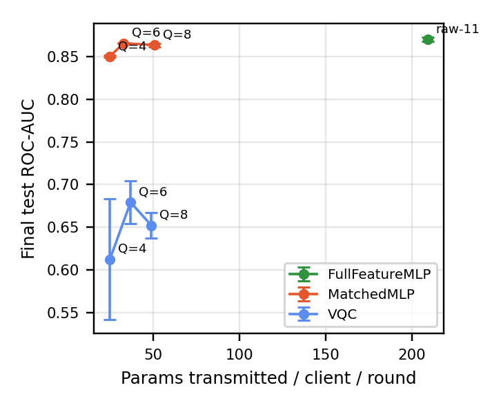
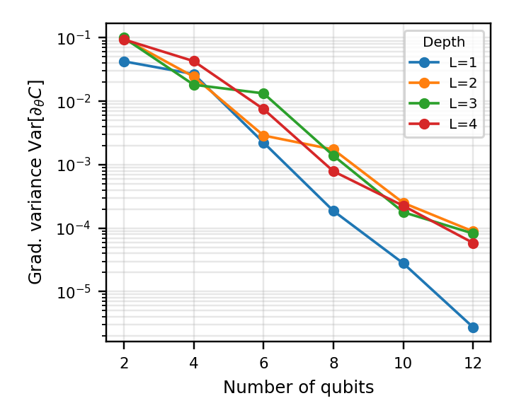
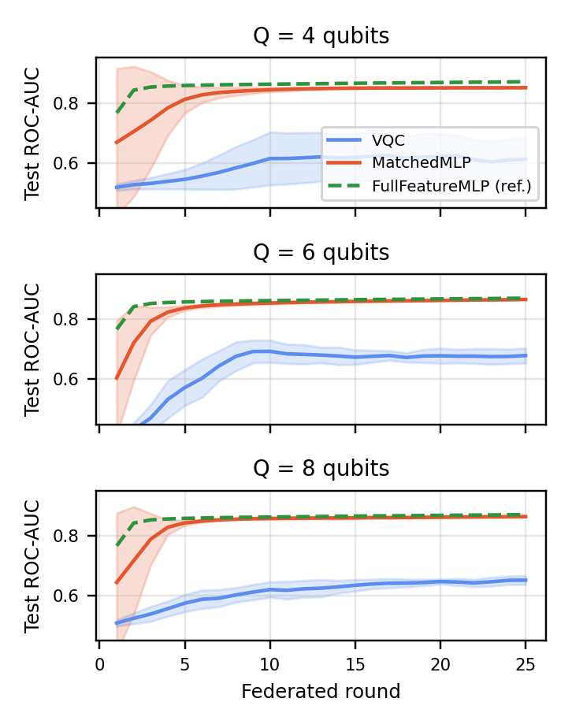
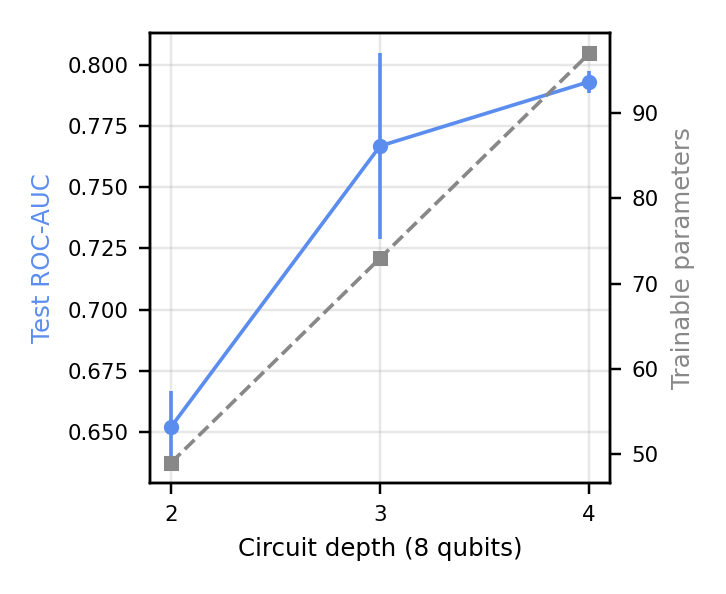

Does a compact variational quantum circuit actually buy communication efficiency as a federated-learning client in a layered 6G sensing network? We built a real, reproducible testbed to find out, and reported what it found, including where the honest answer is "not yet."
Twelve real air-quality monitoring stations act as edge clients. Fog groupings are derived deterministically from the data itself: each station's mean pollutant profile is ranked along its first principal component and cut into four equal buckets, with no external geographic metadata assumed.
Broadcasts the updated global model back down to every edge for the next round.
Dingling, Tiantan, Wanshouxigong
Huairou, Dongsi, Guanyuan
Changping, Gucheng, Aotizhongxin
Shunyi, Nongzhanguan, Wanliu
25 federated rounds, 5 seeds, class-balanced mini-batch SGD. All circuits simulated exactly on PennyLane's state-vector simulator; no physical QPU claimed anywhere.
| Model | Params | ROC-AUC |
|---|---|---|
| VQC, 4 qubits | 25 | 0.612 |
| VQC, 6 qubits | 37 | 0.679 |
| VQC, 8 qubits | 49 | 0.652 |
| Matched MLP, 4 in | 25 | 0.850 |
| Matched MLP, 8 in | 51 | 0.864 |
| Full-feature MLP | 209 | 0.870 |
Shallow (L=2) VQCs trail parameter-matched classical models by 0.19–0.24 AUC at equal communication cost.
| Depth L | Params | ROC-AUC |
|---|---|---|
| 2 | 49 | 0.652 |
| 3 | 73 | 0.767 |
| 4 | 97 | 0.793 |
Depth 4 closes most of the gap (within 0.08 of the 209-param classical reference) while still using 54% fewer parameters, at a measured trainability cost.

Fig. 2: Accuracy vs. communication payload across every configuration tested.

Fig. 4: Barren-plateau gradient-variance diagnostic: the mechanistic reason deeper, wider circuits get harder to train.

Fig. 1: Convergence curves, VQC vs. matched and full-feature classical baselines.

Fig. 3: Circuit-depth trade-off: accuracy recovered versus parameters spent.
All source code, dataset processing scripts, raw per-round results, and figures are publicly available. The manuscript itself is not included (IEEE copyright once submitted).
Beijing dataset loader, daily aggregation, PCA, data-driven fog clustering.
Natively-batched PennyLane VQC client model.
Matched-input and full-feature classical baselines.
3-tier hierarchical FedAvg training loop.
SHA-256 update-integrity hash chain (not a blockchain).
Main sweep, depth ablation, barren-plateau diagnostic, integrity overhead.
Every raw CSV/JSON number reported in the paper.
pytest suite: data pipeline, models, FedAvg, hash chain.
git clone https://github.com/sunilgentyala/FedQSense.git cd FedQSense pip install -r requirements.txt # Download the real Beijing Multi-Site Air-Quality dataset (see README) python experiments/run_main_experiment.py python experiments/make_figures.py
If you use this testbed or build on this benchmark, please cite:
@inproceedings{gentyala2026fedqsense,
title = {{FedQSense}: Quantum Federated Learning for
Communication-Efficient Smart-City Sensing over {6G}},
author = {Gentyala, Sunil and Shariff, Vahiduddin and Caprio, Floriano and
Karumanchi, Mani Deep and Kasturi, Akhila},
booktitle = {Proceedings of the IEEE Global Communications Conference
(GLOBECOM) Workshops, WS-02: The Second Workshop on
Quantum Machine Learning for Next-Generation Networks},
year = {2026},
publisher = {IEEE}
}
Sunil Gentyala • sunil.gentyala@ieee.org • IEEE Senior Member #101760715 • GitHub Portfolio